Οι άνθρωποί
της.
Στην πλατεία, στο καφενείο, στο σπίτι. Οι άνθρωποι που δίνουν στον τόπο τη ζεστασιά του.

Η παλιά εικόνα της παρέας επιστρέφει. Εικονογράφηση με τεχνητή νοημοσύνη· τα πρόσωπα και η σκηνή είναι φανταστικά.
Ένα «έλα να κάτσεις» μπορεί να χωρέσει ολόκληρη την Ήπειρο. Την καρέκλα που τραβιέται για τον επισκέπτη, την κουβέντα που συνεχίζεται από χθες, μια πίτα που μοιράζεται στο τραπέζι. Δίπλα στους μεγαλύτερους, οι νεότεροι φέρνουν τις δικές τους διαδρομές. Κάποιοι μένουν, κάποιοι επιστρέφουν, άλλοι κρατούν τον τόπο μαζί τους από μακριά. Όσα τους ενώνουν φαίνονται στις απλές στιγμές: στην παρέα, στη μαστοριά, στο πρώτο ψωμί της μέρας, στη μουσική και στη φροντίδα του ενός για τον άλλο.
Έλα να κάτσεις μαζί μας
Στο καφενείο και στην πλατεία, η κουβέντα δεν χρειάζεται αφορμή. Οι παππούδες και οι γιαγιάδες φέρνουν στο τραπέζι ιστορίες, πειράγματα και μια ζωή από μικρές έγνοιες. Η φιλοξενία φαίνεται στις απλές χειρονομίες: στο πιάτο που περνά στον διπλανό, στην καρέκλα που τραβιέται για να χωρέσει ακόμη ένας. Κι έξω από το σπίτι, στο κατώφλι ή κάτω από τον πλάτανο, η καθημερινότητα γίνεται πιο ζεστή όταν μοιράζεται.
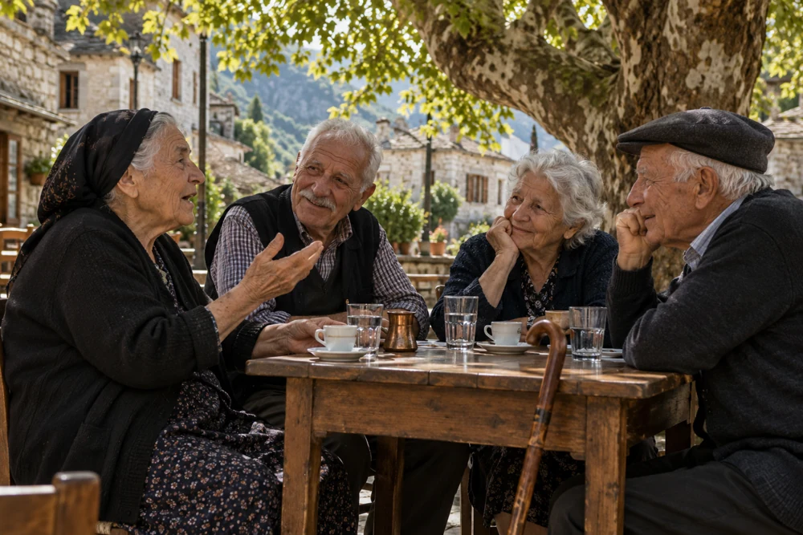
Παππούδες και γιαγιάδες μοιράζονται την κουβέντα και τον καφέ στο χωριό. Εικονογράφηση με ΑΙ· τα πρόσωπα και η σκηνή είναι φανταστικά.
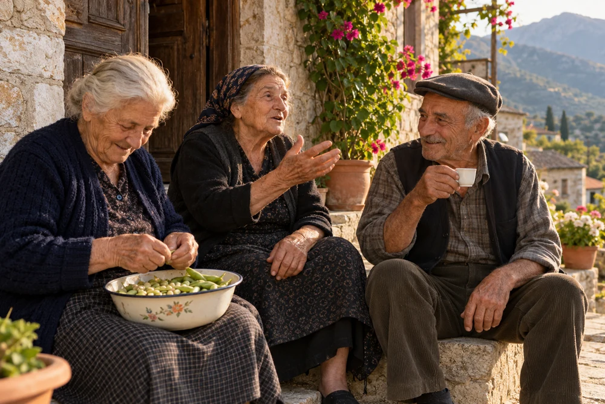
Η δουλειά των χεριών, το πείραγμα και η παρέα στο κατώφλι. Εικονογράφηση με ΑΙ· τα πρόσωπα και η σκηνή είναι φανταστικά.
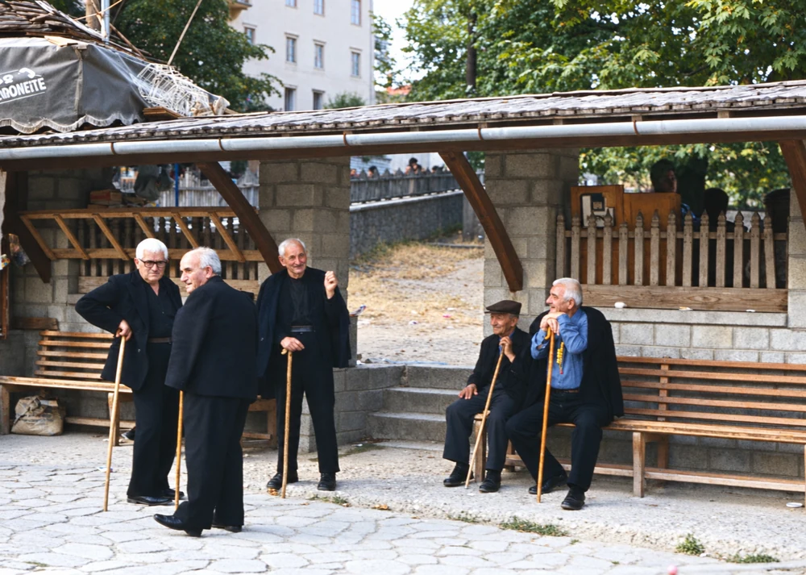
Άνδρες στην κεντρική πλατεία του Μετσόβου, Αύγουστος 1985. Επεξεργασμένη με ΑΙ απόδοση της ιστορικής φωτογραφίας, με αποκατάσταση χρώματος και ευκρίνειας. Δείτε και την αρχική λήψη.
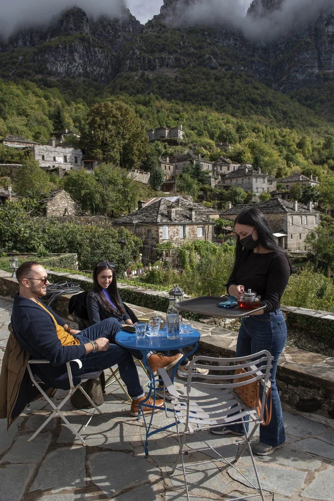
Μια παρέα στην αυλή του Πινόκιο, με το χωριό και το βουνό στο βάθος.
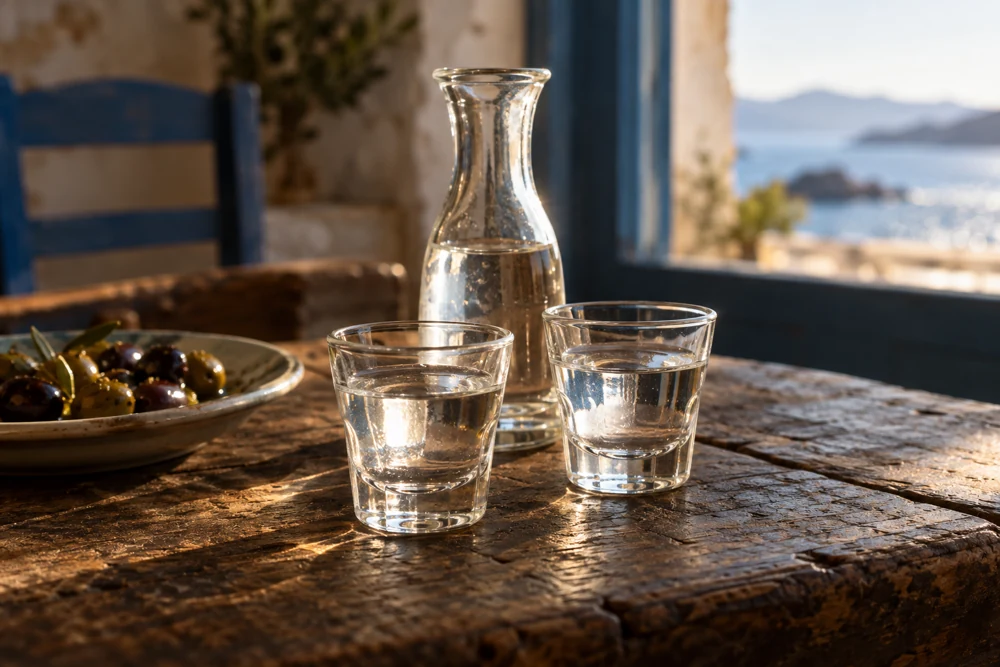
Δύο ποτήρια τσίπουρο και ένα καραφάκι στο τραπέζι της παρέας. Εικονογράφηση με τεχνητή νοημοσύνη.
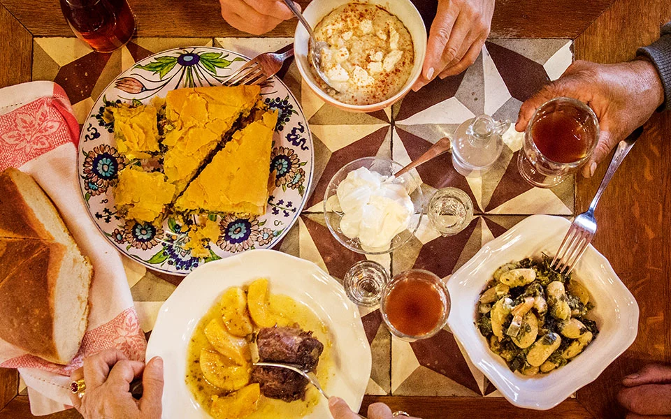
Το τραπέζι γεμίζει με πιάτα που μοιράζονται. Η φιλοξενία φαίνεται και στις μικρές χειρονομίες.
Λεζάντες & φωτογράφοι
Παππούδες και γιαγιάδες μοιράζονται την κουβέντα και τον καφέ στο χωριό. Εικονογράφηση με ΑΙ· τα πρόσωπα και η σκηνή είναι φανταστικά.
Η δουλειά των χεριών, το πείραγμα και η παρέα στο κατώφλι. Εικονογράφηση με ΑΙ· τα πρόσωπα και η σκηνή είναι φανταστικά.
Άνδρες στην κεντρική πλατεία του Μετσόβου, Αύγουστος 1985. Επεξεργασμένη με ΑΙ απόδοση της ιστορικής φωτογραφίας, με αποκατάσταση χρώματος και ευκρίνειας. Δείτε και την αρχική λήψη.
Μια παρέα στην αυλή του Πινόκιο, με το χωριό και το βουνό στο βάθος.
Δύο ποτήρια τσίπουρο και ένα καραφάκι στο τραπέζι της παρέας. Εικονογράφηση με τεχνητή νοημοσύνη.
Το τραπέζι γεμίζει με πιάτα που μοιράζονται. Η φιλοξενία φαίνεται και στις μικρές χειρονομίες.
Η γνώση μένει στα χέρια
Στον πάγκο της δουλειάς, η γνώση γίνεται κίνηση. Το μέταλλο δουλεύεται, χαράζεται και παίρνει μορφή. Από τη γιαννιώτικη αργυροχοΐα ως τη δουλειά της καμπάνας στη Θεσπρωτία, το βλέμμα στέκεται στα χέρια, στα εργαλεία και στην υπομονή της κατασκευής.
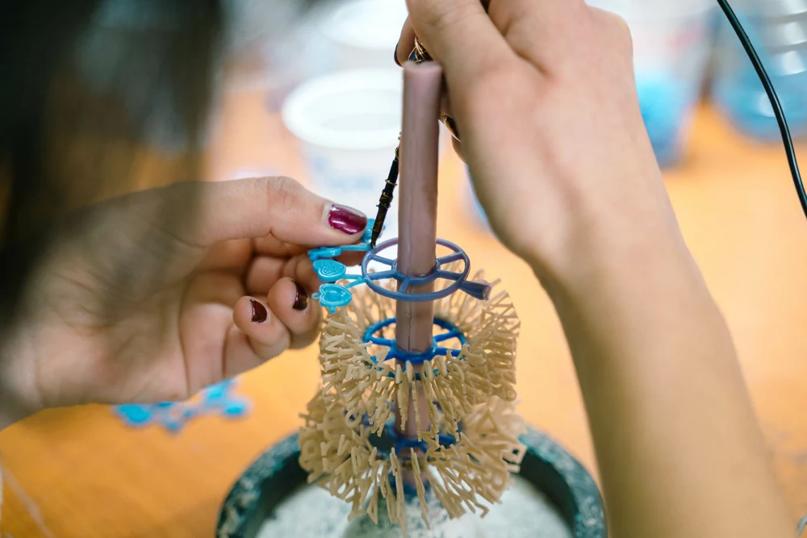
Τα χέρια δουλεύουν ένα πρόπλασμα κοσμήματος, μία λεπτομέρεια κάθε φορά.
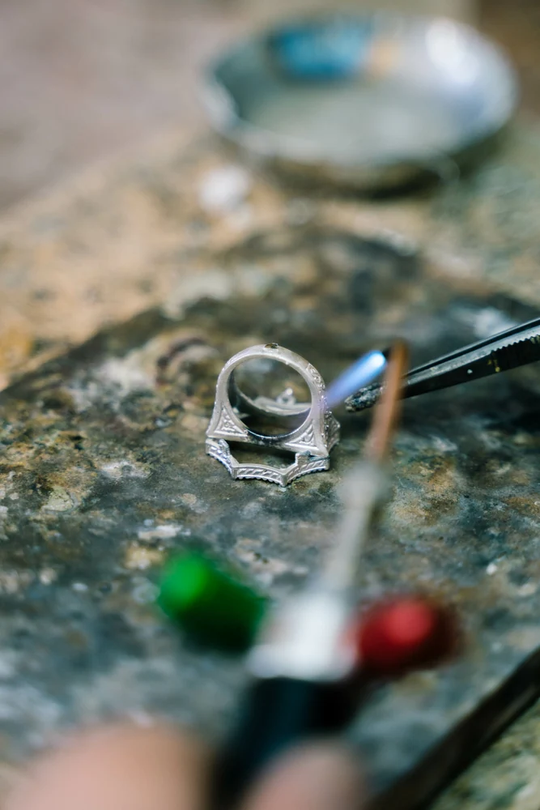
Μέταλλο και εργαλεία στον πάγκο της αργυροχοΐας. Η λεπτομέρεια δουλεύεται πριν το αντικείμενο ολοκληρωθεί.
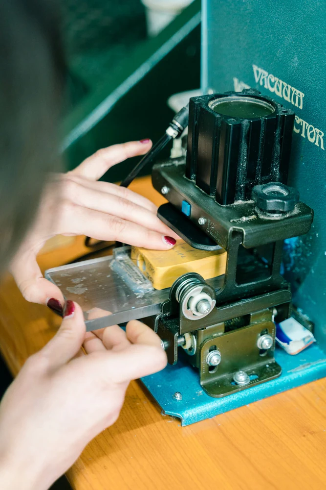
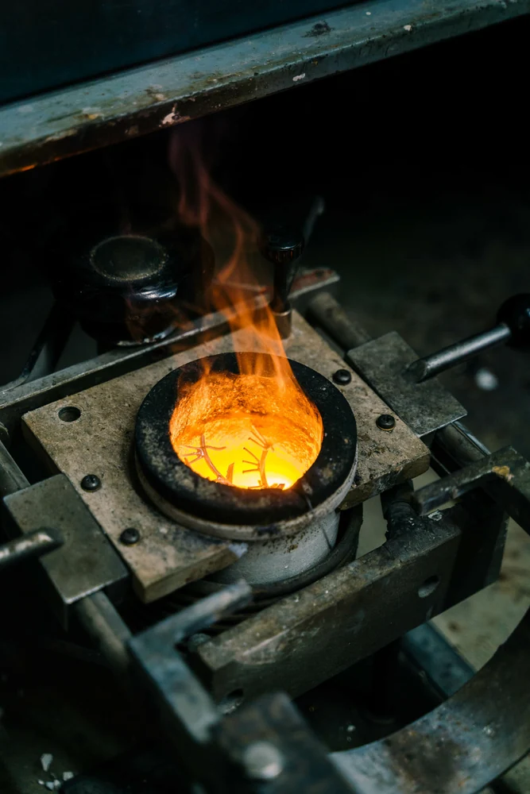
Η φωτιά και το μέταλλο, πριν το αντικείμενο πάρει την τελική του μορφή.
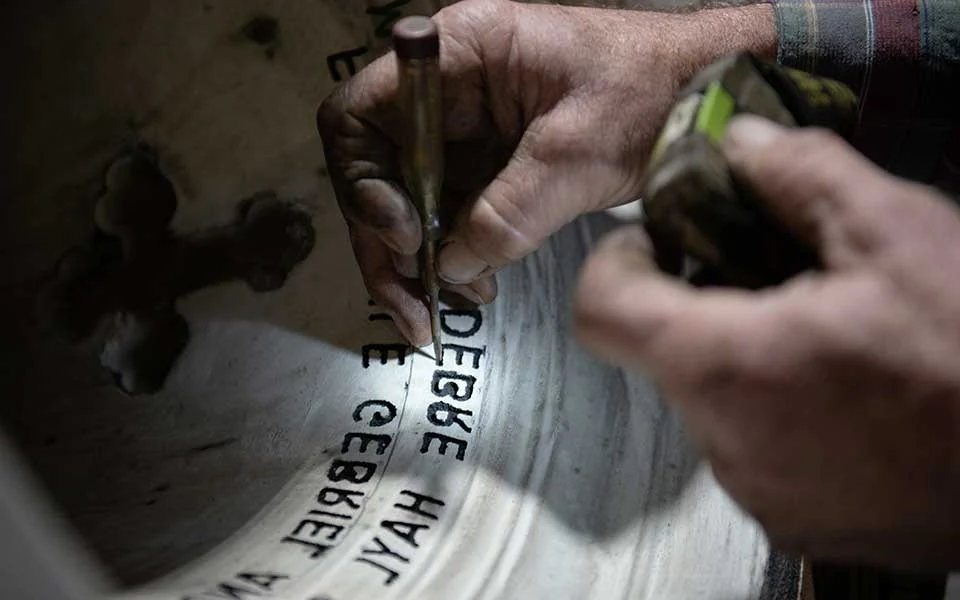
Η χάραξη στο μέταλλο γίνεται με το χέρι, σε ένα στάδιο της κατασκευής καμπάνας.
Λεζάντες & φωτογράφοι
Τα χέρια δουλεύουν ένα πρόπλασμα κοσμήματος, μία λεπτομέρεια κάθε φορά.
Μέταλλο και εργαλεία στον πάγκο της αργυροχοΐας. Η λεπτομέρεια δουλεύεται πριν το αντικείμενο ολοκληρωθεί.
Το υλικό περνά από τον κύλινδρο του εργαστηρίου.
Η φωτιά και το μέταλλο, πριν το αντικείμενο πάρει την τελική του μορφή.
Η χάραξη στο μέταλλο γίνεται με το χέρι, σε ένα στάδιο της κατασκευής καμπάνας.
Από το τραπέζι ως το νερό
Το φύλλο που ανοίγεται, η πίτα που μοιράζεται, η δουλειά στη λίμνη και μια κοινή διαδρομή στο ποτάμι. Η καθημερινή ζωή δένει τους ανθρώπους με τον τόπο μέσα από όσα κάνουν μαζί. Οι γνώριμες κινήσεις αποκτούν τη δική τους θέση στη μνήμη.
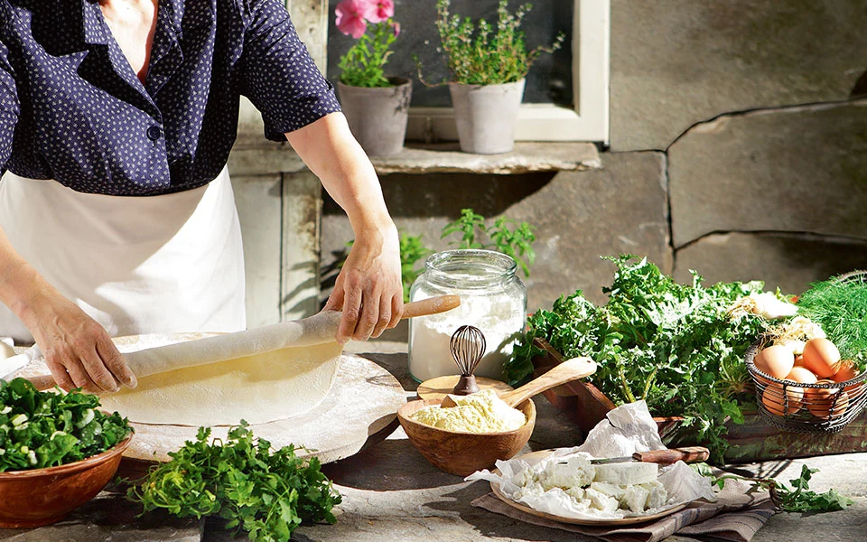
Χέρια ανοίγουν φύλλο για πίτα. Αλεύρι, πλάστης και μια γνώση που περνά στην επόμενη γενιά.
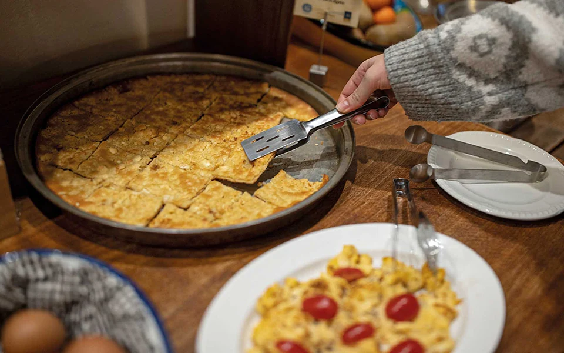
Η πίτα κόβεται και μοιράζεται στο τραπέζι. Μια καθημερινή εικόνα φροντίδας και φιλοξενίας.
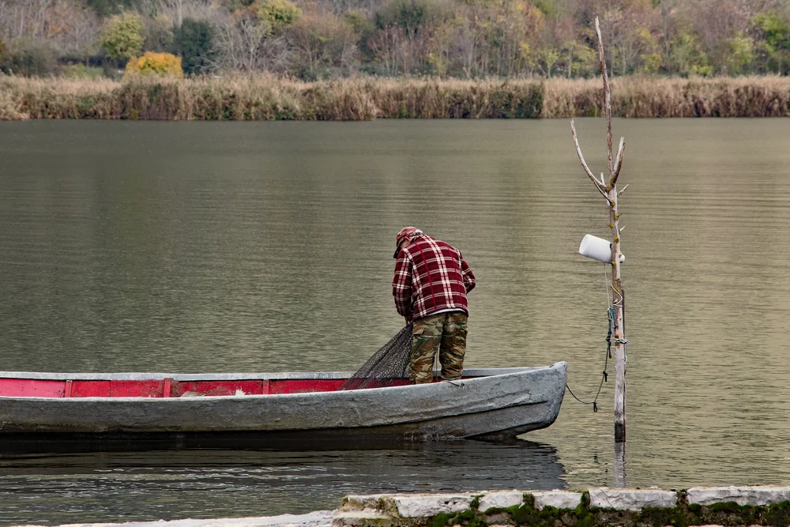
Αλιέας στη λίμνη Παμβώτιδα. Μια σκηνή εργασίας στην όχθη, μακριά από την ώρα της γιορτής.

Μια βάρκα περνά κάτω από το γεφύρι. Ο δεσμός με το νερό γίνεται κοινή εμπειρία.
Λεζάντες & φωτογράφοι
Χέρια ανοίγουν φύλλο για πίτα. Αλεύρι, πλάστης και μια γνώση που περνά στην επόμενη γενιά.
Η πίτα κόβεται και μοιράζεται στο τραπέζι. Μια καθημερινή εικόνα φροντίδας και φιλοξενίας.
Αλιέας στη λίμνη Παμβώτιδα. Μια σκηνή εργασίας στην όχθη, μακριά από την ώρα της γιορτής.
Φωτ. DimitrisP67 · CC BY-SA 4.0Μια βάρκα περνά κάτω από το γεφύρι. Ο δεσμός με το νερό γίνεται κοινή εμπειρία.
Το ψωμί της μέρας, το γλυκό της γιορτής
Η τέχνη του φούρνου είναι κομμάτι της ηπειρώτικης μαστοριάς. Το ζύμωμα, η υπομονή στο ψήσιμο και τα γλυκά του ταψιού συνδέουν τον καθημερινό μόχθο με τη χαρά του κεράσματος.
Από το Δεσποτικό Ιωαννίνων, όπως και από άλλα χωριά της Ηπείρου, αρτοποιοί και αρτεργάτες πήραν τον δρόμο για την Αθήνα και τον Πειραιά. Πίσω από το ψωμί της γειτονιάς βρίσκονται και οι δύσκολες αρχές τους: ύπνος πάνω σε τσουβάλια με αλεύρι, ξύπνημα στις τρεις, άναμμα του φούρνου, ζύμωμα και ψήσιμο. Η τέχνη έδινε μεροκάματο και ένα πρώτο στήριγμα στους νέους που έφευγαν από το χωριό. Το προζύμι και το αργό ψήσιμο στη γάστρα κρατούν μια άλλη, σπιτική όψη αυτής της γνώσης. [10] [11]
Στα Γιάννενα, ο μπακλαβάς και το κανταΐφι αποτελούν αναγνωρίσιμο κομμάτι της γλυκιάς παράδοσης. Φύλλο, βούτυρο, ξηροί καρποί και σιρόπι θέλουν μέτρο και υπομονή. Το ταψί κόβεται σε κομμάτια για το κέρασμα και τη μοιρασιά: μια γλυκιά συνέχεια της ίδιας φιλοξενίας, από το καθημερινό τραπέζι ως τη γιορτή. [12]
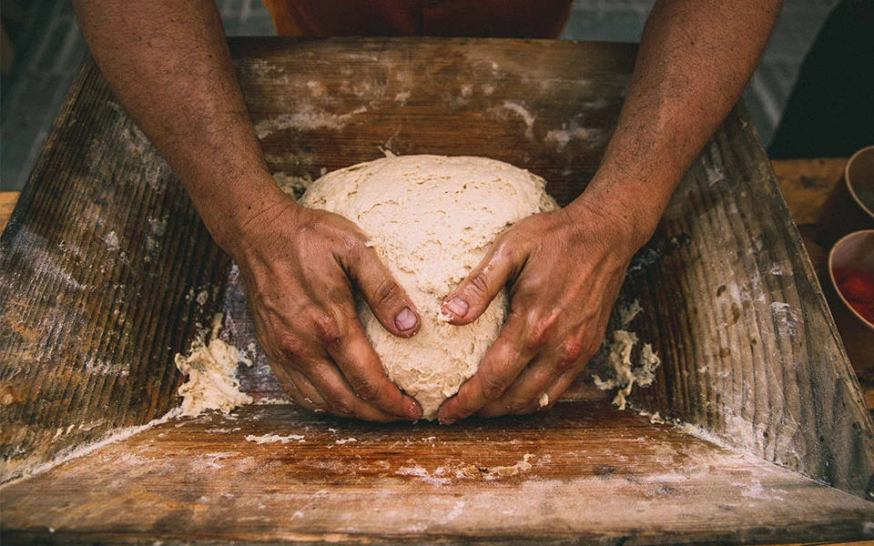
Χέρια ζυμώνουν ψωμί για ένα κοινό τραπέζι στα Γιάννενα. Η καθημερινή τροφή αρχίζει από αυτή την κίνηση.
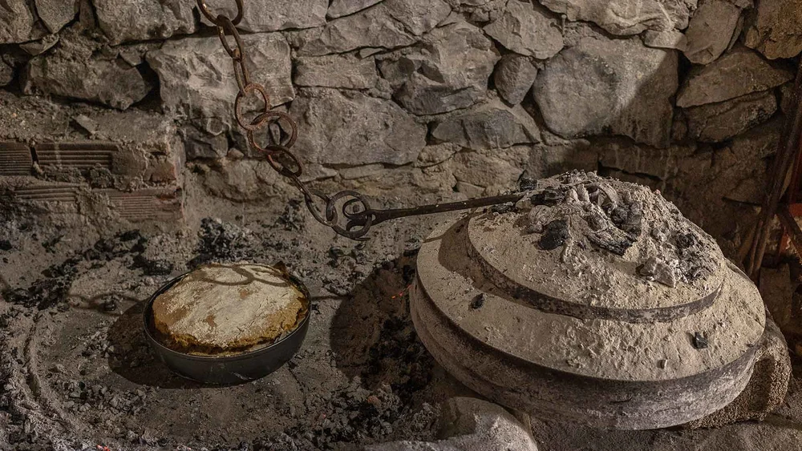
Παραδοσιακό ψήσιμο ψωμιού στη σιδερένια γάστρα, με τη θράκα γύρω από το σκεύος.
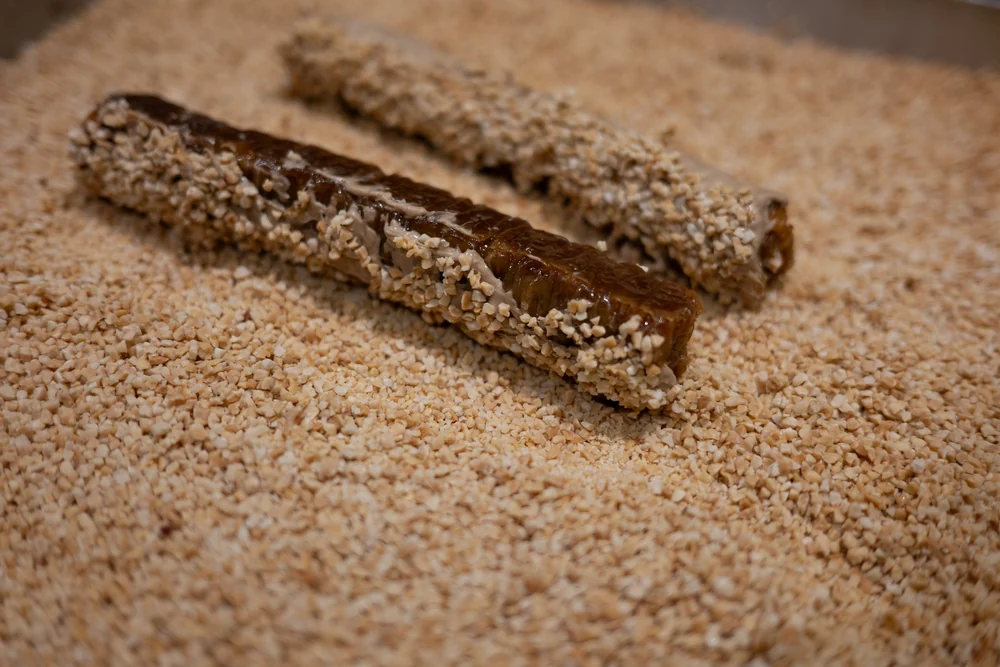
Σιροπιαστό φύλλο και γέμιση ξηρών καρπών, από το φωτογραφικό αφιέρωμα του ΕΟΤ στον γιαννιώτικο μπακλαβά.
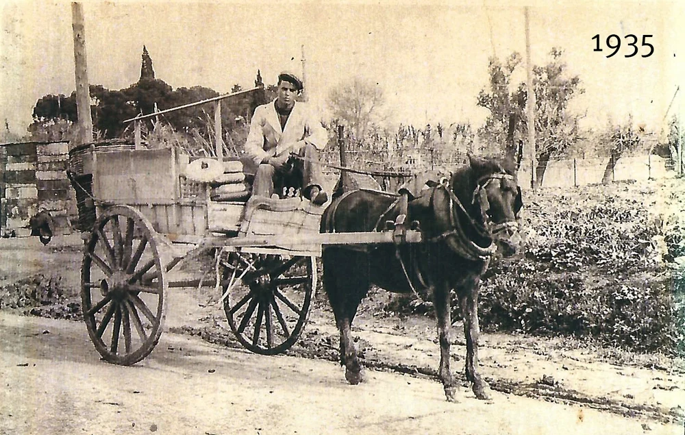
Αρτεργάτης από το Δεσποτικό διανέμει ψωμί στον Πειραιά το 1935. Αρχειακή εικόνα της ηπειρώτικης αρτοποιητικής διαδρομής.
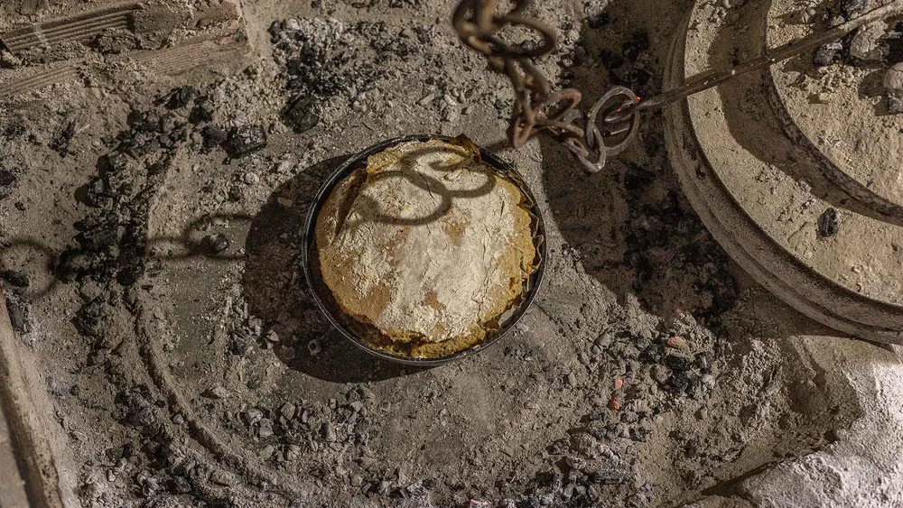
Το προζυμένιο καρβέλι δίπλα στη γάστρα. Αλεύρι, χρόνος και προσεκτικό ψήσιμο.
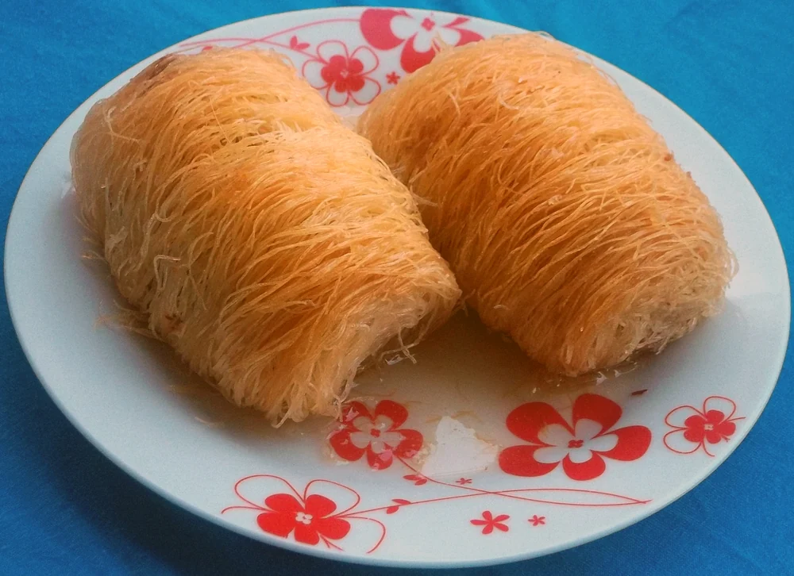
Οι λεπτές ίνες του κανταϊφιού κρατούν το σιρόπι. Ενδεικτική φωτογραφία του γλυκού, χωρίς καταγεγραμμένο τόπο λήψης.
Λεζάντες & φωτογράφοι
Χέρια ζυμώνουν ψωμί για ένα κοινό τραπέζι στα Γιάννενα. Η καθημερινή τροφή αρχίζει από αυτή την κίνηση.
Παραδοσιακό ψήσιμο ψωμιού στη σιδερένια γάστρα, με τη θράκα γύρω από το σκεύος.
Σιροπιαστό φύλλο και γέμιση ξηρών καρπών, από το φωτογραφικό αφιέρωμα του ΕΟΤ στον γιαννιώτικο μπακλαβά.
Αρτεργάτης από το Δεσποτικό διανέμει ψωμί στον Πειραιά το 1935. Αρχειακή εικόνα της ηπειρώτικης αρτοποιητικής διαδρομής.
Το προζυμένιο καρβέλι δίπλα στη γάστρα. Αλεύρι, χρόνος και προσεκτικό ψήσιμο.
Οι λεπτές ίνες του κανταϊφιού κρατούν το σιρόπι. Ενδεικτική φωτογραφία του γλυκού, χωρίς καταγεγραμμένο τόπο λήψης.
Φωτ. Mar.masouridi · CC BY-SA 4.0
Από τη λίμνη στα τραπέζια της πόλης
Ένα παγκάκι δίπλα στην Παμβώτιδα, μια βόλτα που καταλήγει σε τραπέζι, μια κουβέντα που κρατά λίγο παραπάνω. Οι νεότερες παρέες δίνουν τον δικό τους ρυθμό στα Γιάννενα. Μεσημέρι με μεζέδες ή βράδυ κάτω από τα ζεστά φώτα των στενών, η χαρά βρίσκεται συχνά στο ίδιο απλό πράγμα: να είσαι μαζί με τους ανθρώπους σου.
Στους πεζοδρόμους και στα στενά του ιστορικού κέντρου, από την κεντρική πλατεία προς τη λίμνη, συναντιούνται φοιτητές, νέοι εργαζόμενοι και παρέες διαφορετικών ηλικιών. Τα καφέ και τα μικρά στέκια για τσίπουρο και τοπικούς μεζέδες γίνονται στάσεις μέσα στη μέρα και τόποι συνάντησης το βράδυ. Η παλιά πόλη συνεχίζει να ζει μέσα από αυτές τις καθημερινές συναντήσεις. [13] [14]
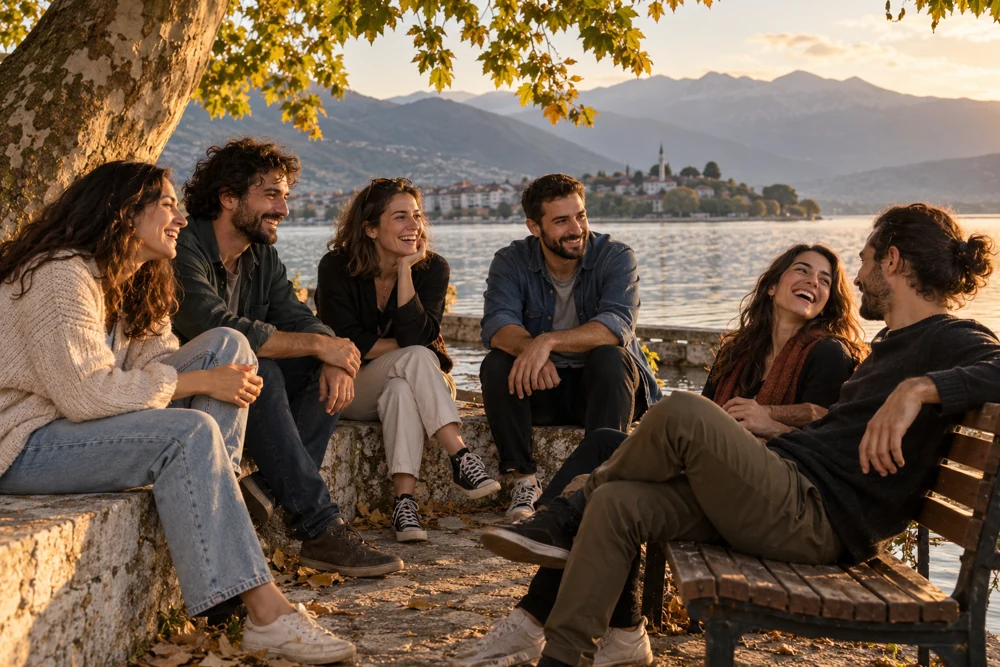
Μια παρέα κάθεται δίπλα στην Παμβώτιδα. Εικονογράφηση με ΑΙ, με φανταστικά πρόσωπα και σκηνή.
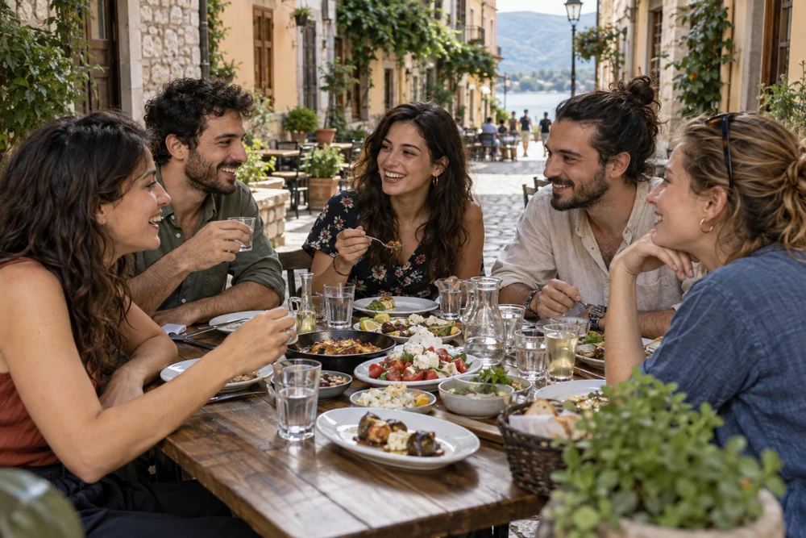
Νεότερη παρέα γύρω από ένα τραπέζι με μεζέδες. Εικονογράφηση με ΑΙ, εμπνευσμένη από τους πεζοδρόμους των Ιωαννίνων· δεν απεικονίζει συγκεκριμένα πρόσωπα ή κατάστημα.
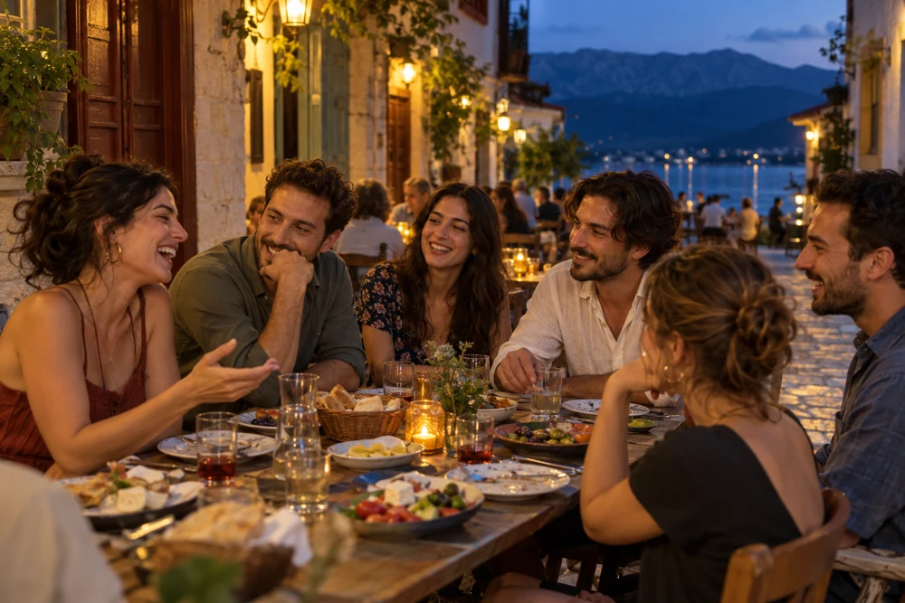
Η βραδινή κουβέντα συνεχίζεται στο τραπέζι. Εικονογράφηση με ΑΙ, εμπνευσμένη από την ατμόσφαιρα των Ιωαννίνων· φανταστικά πρόσωπα και χώρος.
Λεζάντες & φωτογράφοι
Μια παρέα κάθεται δίπλα στην Παμβώτιδα. Εικονογράφηση με ΑΙ, με φανταστικά πρόσωπα και σκηνή.
Νεότερη παρέα γύρω από ένα τραπέζι με μεζέδες. Εικονογράφηση με ΑΙ, εμπνευσμένη από τους πεζοδρόμους των Ιωαννίνων· δεν απεικονίζει συγκεκριμένα πρόσωπα ή κατάστημα.
Η βραδινή κουβέντα συνεχίζεται στο τραπέζι. Εικονογράφηση με ΑΙ, εμπνευσμένη από την ατμόσφαιρα των Ιωαννίνων· φανταστικά πρόσωπα και χώρος.
Η παρέα αλλάζει, ο δεσμός μένει
Οι οργανοπαίκτες ενός γάμου, οι γυναίκες που στέκονται μαζί, ο κύκλος του πανηγυριού. Οι φωτογραφίες κρατούν συναντήσεις από διαφορετικές δεκαετίες. Τις συνδέει η ανάγκη να βρίσκεσαι με τους άλλους: να ακούσεις, να θυμηθείς, να πιάσεις το επόμενο χέρι στον χορό. Η παρέα αλλάζει πρόσωπα και συνήθειες· η χαρά της συνάντησης συνεχίζεται.
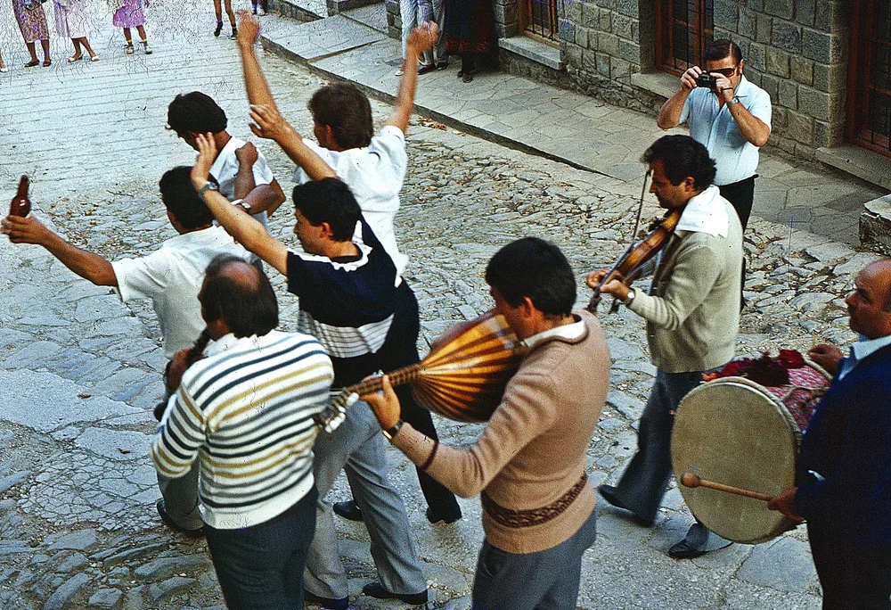
Μουσικοί σε γάμο στο Μέτσοβο. Οι ήχοι περνούν από τα όργανα στα χέρια που σηκώνονται για τον χορό.
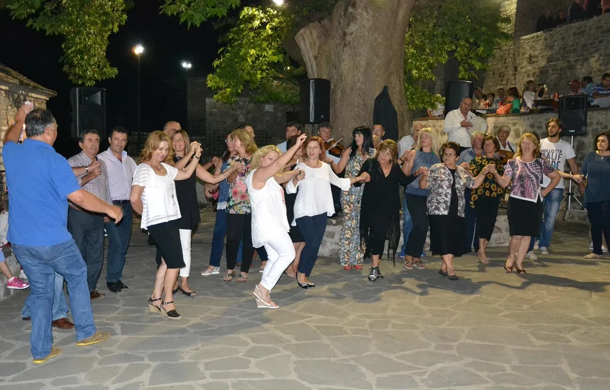
Τριπλός κύκλος χορού στο πανηγύρι της Μεταμορφώσεως του Σωτήρος στο Συρράκο. Το σχήμα του χορού γίνεται σχήμα της κοινότητας.
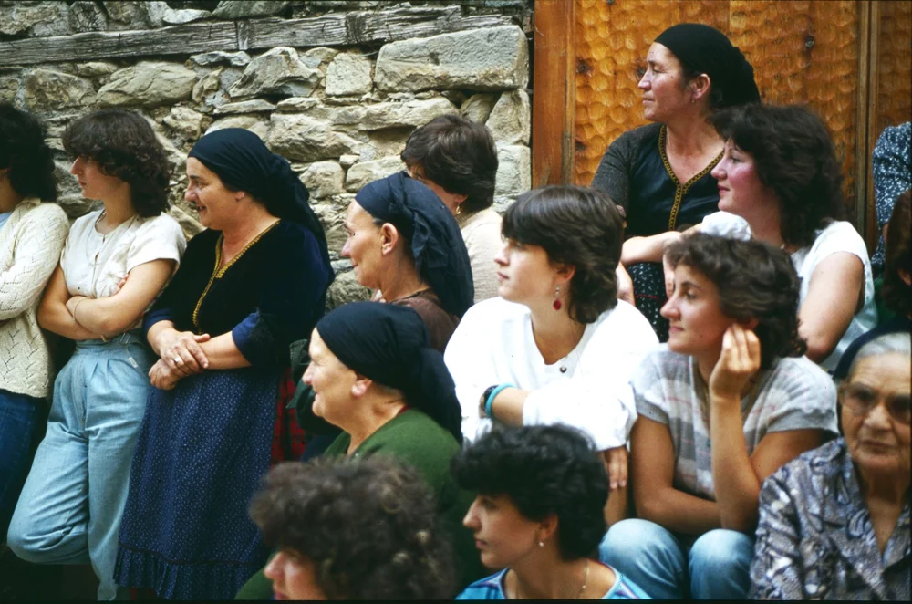
Γυναίκες παρακολουθούν έναν γάμο στο Μέτσοβο. Διαφορετικές γενιές μοιράζονται τη θέση του θεατή στο πλάι του δρόμου.
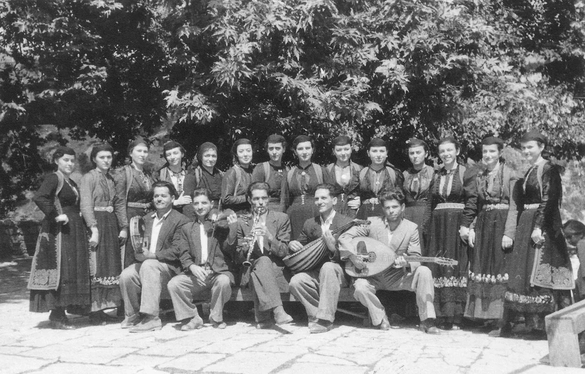
Χορευτική ομάδα γυναικών στη Βίτσα, το 1958. Μια φωτογραφία αρχείου κρατά τα πρόσωπα, τις φορεσιές και τη συνύπαρξη.
Λεζάντες & φωτογράφοι
Μουσικοί σε γάμο στο Μέτσοβο. Οι ήχοι περνούν από τα όργανα στα χέρια που σηκώνονται για τον χορό.
Φωτ. Ziegler175 · CC BY-SA 3.0Τριπλός κύκλος χορού στο πανηγύρι της Μεταμορφώσεως του Σωτήρος στο Συρράκο. Το σχήμα του χορού γίνεται σχήμα της κοινότητας.
Γυναίκες παρακολουθούν έναν γάμο στο Μέτσοβο. Διαφορετικές γενιές μοιράζονται τη θέση του θεατή στο πλάι του δρόμου.
Φωτ. Ziegler175 · CC BY-SA 3.0Χορευτική ομάδα γυναικών στη Βίτσα, το 1958. Μια φωτογραφία αρχείου κρατά τα πρόσωπα, τις φορεσιές και τη συνύπαρξη.
Φωτογράφοι, τεκμηρίωση & προέλευση
- Travel.gr · Τεχνικές αργυροχοΐας στα Ιωάννινα
- Greece Is · Η τέχνη της καμπάνας στη Θεσπρωτία
- Greece Is · Ηπειρώτικη κουζίνα και κοινό τραπέζι
- Greece Is · Μαγειρική και φιλοξενία στα Τζουμέρκα
- Travel.gr · Στιγμές καθημερινής ζωής στο Ζαγόρι
- Greece Is · Σύγχρονες παρέες στα Ιωάννινα
- Υπουργείο Πολιτισμού · Το παραδοσιακό πανηγύρι του Συρράκου
- Υπουργείο Πολιτισμού · Το πανηγύρι της Βίτσας
- Discover Greece · Διαδρομές στο Ζαγόρι και στον Βοϊδομάτη
- Αδελφότητα Δεσποτικού Ιωαννίνων · Αρτοποιοί και αρτεργάτες
- Γαστρονόμος · Ψωμί, προζύμι και παραδοσιακό ψήσιμο στην Ήπειρο
- Ελληνικός Οργανισμός Τουρισμού · Η γλυκιά παράδοση των Ιωαννίνων
- Δήμος Ιωαννιτών · Πεζόδρομοι και καθημερινή ζωή στην πόλη
- Δήμος Ιωαννιτών · Το ιστορικό κέντρο και τα στέκια του
Οι πραγματικές φωτογραφίες διατηρούν την προέλευση και τη χρονολογία τους όπου τεκμηριώνονται. Το εξώφυλλο και οι νέες σκηνές της παρέας, των μεγαλύτερων, του τσίπουρου και των πεζοδρόμων είναι εικονογραφήσεις με τεχνητή νοημοσύνη: τα πρόσωπα είναι φανταστικά και οι εικόνες δεν καταγράφουν συγκεκριμένο περιστατικό ή κατάστημα. Η φωτογραφία του Μετσόβου (Αύγουστος 1985, Ziegler175) έχει υποστεί αποκατάσταση με ΑΙ· η επεξεργασία μπορεί να ανασυνθέτει λεπτομέρειες και το πρωτότυπο παραμένει διαθέσιμο από τη λεζάντα της. Δεν αποδίδονται προσωπικές ιστορίες ή λόγια στους εικονιζόμενους.
Η προέλευση και οι φωτογράφοι αναφέρονται στις συλλογές και στην προβολή κάθε εικόνας. Οι άδειες Creative Commons σημειώνονται όπου ισχύουν. Τα δικαιώματα των υπόλοιπων εικόνων παραμένουν στους αντίστοιχους δημιουργούς και εκδότες. Οι απλές φωτογραφικές αναπαραγωγές έχουν μόνο προσαρμογή μεγέθους και μετατροπή σε WebP. Οι εικόνες ΑΙ και η αποκατάσταση δηλώνονται χωριστά. Στη μεγέθυνση προβάλλεται ολόκληρη η εικόνα.